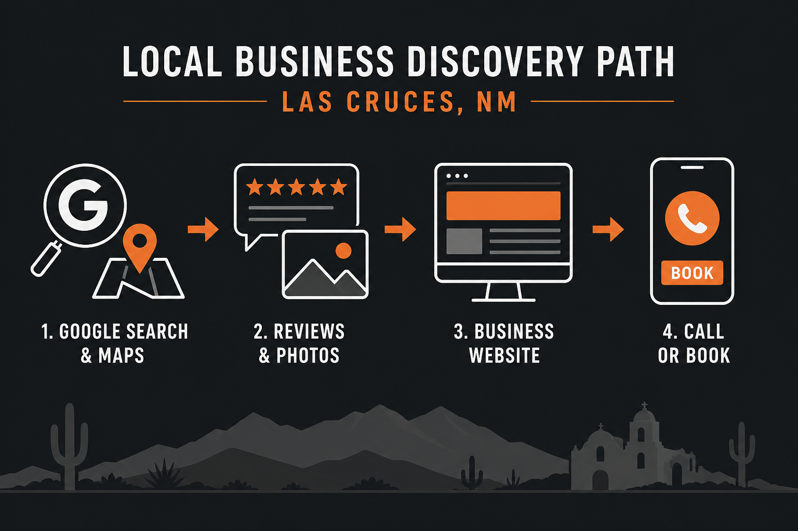

In Las Cruces and Mesilla, a lot of business still starts with a friend texting a name. The rest starts with a phone: “plumber near me,” “best chile relleno Mesilla,” “dentist East Mesa,” “coffee downtown Las Cruces.” If your business is invisible in that second path, you only get the people who already know you.
This is a local search playbook for Mesilla Valley owners. It is written by Blacnova Development, a web studio based in Las Cruces, for shops and services across Doña Ana County. The goal is simple: show up where locals look, look trustworthy when they check you, and make the next step obvious.
How people actually search here
BrightLocal’s consumer research keeps repeating the same national pattern, and it matches what we see with local owners: Google still dominates local discovery. In recent BrightLocal work, most people who searched for a local business used Google Search at some point, many start there, and about three-quarters use more than one channel before they decide. Maps matter too. A meaningful share search directly inside Google Maps.
Translate that to Las Cruces life:
- A student near NMSU searches on mobile for lunch or a bike shop.
- A homeowner on the East Mesa wants an HVAC tech who serves their ZIP, not Albuquerque.
- A visitor walking Mesilla Plaza looks up hours and parking before they commit.
- A parent near Telshor compares clinics by reviews, then opens websites.
Word of mouth still matters in Southern New Mexico. Online research is how strangers verify the recommendation, and how people without a recommendation start at all.
The path from Maps to a call

Think of four stops. Miss one and the lead leaks:
- Discovery. Search or Maps surfaces your listing.
- Proof. Stars, review count, photos, hours, categories.
- Confirmation. Website or listing details answer “is this the right fit?”
- Action. Tap to call, form, book, directions.
BrightLocal decision research also highlights proximity, complete information, reviews, and photos as choice drivers. For Las Cruces service businesses, that means your pin, your service area, and your real job photos matter as much as a clever tagline.
Google Business Profile: your front door
If you only fix one thing this month, fix the profile.
- Claim and verify it under the exact business name people use.
- Match name, address, and phone to your website and print materials.
- Pick the most accurate primary category, then honest secondary categories.
- Set hours for holidays (New Mexico State games weekends, Mesilla events, and holiday weeks confuse customers).
- Upload real photos: storefront, team, work in progress, finished jobs. Skip generic stock.
- Ask happy customers for reviews. Reply to every review, including the tough ones.
- Link your real website. Google’s auto site is not a strategy.
Profile suspensions happen. Keep your website as backup so a listing glitch does not erase you. We covered that tradeoff in who needs a website.
Your website: where trust finishes
After reviews, many people click through to the business site. That page has to load fast on a phone on I-10 traffic or a slow café Wi-Fi near the Plaza. It should show what you do, where you serve, and how to reach you without hunting.
For most Mesilla Valley service businesses, start with a clear brochure or lead-gen site. Match the type to how people buy. See types of websites and our Las Cruces and Mesilla website design guide for what “good” looks like locally.
Minimum trust stack on the site:
- City and service-area language that matches reality (Las Cruces, Mesilla, Doña Ana County, nearby towns you actually cover)
- Mobile tap-to-call and a short contact form
- Same NAP as Google
- A few real reviews or project photos
- Clear services, not a vague “solutions” paragraph
Neighborhood and service-area language
Google rewards clarity, not keyword stuffing. Write for how locals talk.
| If you serve… | Say it plainly on the site and profile |
|---|---|
| Downtown / Main Street corridor | Downtown Las Cruces, hours, parking notes if relevant |
| Historic Mesilla | Mesilla, Mesilla Plaza area, visitor-friendly hours |
| Campus / University area | Near NMSU, University Avenue corridor |
| East side growth | East Mesa, Telshor area, ZIPs you cover |
| Wider county work | Doña Ana County, Anthony, Hatch, White Sands area if true |
Service businesses should prefer honest service-area pages over fake street addresses. Consistency beats cleverness.
Mesilla Valley get-found checklist
- ☐ Google Business Profile claimed, complete, and linked to your real site
- ☐ Name, address, phone identical on site, profile, and print
- ☐ Categories and services match what you actually sell
- ☐ Recent photos of your Las Cruces or Mesilla location or work
- ☐ Review ask process after every good job
- ☐ Mobile-fast website with clear call / contact / book
- ☐ Service areas written in local language (not just “nationwide”)
- ☐ Social profiles point home; they are not your only home
- ☐ Basic tracking so you know if calls and forms increase
Print that list. Run it every quarter. Local SEO is maintenance, not a one-time launch party.
Where Blacnova Development fits
Blacnova Development builds the owned half of this system: fast websites, clean structure for local search, forms that work, and hosting habits that keep client sites secure. We are based in Las Cruces and work with Mesilla Valley businesses that want to look as solid online as they do in person.
We are not a national template mill. Local context matters: bilingual households, tourism spikes around Mesilla, campus calendars, and service areas that jump from city lots to county roads. The site should reflect that.
For free local counseling and print partners, see our Las Cruces business resources shortlist. For who we are and how projects run, read About Blacnova Development.
Want help getting found in Las Cruces?
Tell Blacnova Development what you sell and where you serve. We will scope a site and local foundation that matches how Mesilla Valley customers actually search.
Sources and further reading
- BrightLocal: Consumer Search Behavior
- BrightLocal: where customers search
- BrightLocal: what makes consumers choose
- BrightLocal: local SEO statistics
- BrightLocal Local Consumer Review Survey
Diagram created for this article. Stats summarized from BrightLocal research linked above.
FAQ
How do customers in Las Cruces find local businesses online?
Mostly Google Search and Maps first, then reviews, photos, and often a website before they call. Many people use more than one channel in the same decision.
Is Facebook enough for Mesilla shops?
Facebook helps events and regulars. It rarely replaces Maps for “near me” intent or a site for trust and ads. Use it as a channel, not the whole strategy.
What should I do first if my budget is tiny?
Complete Google Business Profile, get real reviews, and launch a simple mobile site with matching contact info. Expand pages when revenue shows up.
Does Blacnova Development only work in Las Cruces?
We are based in Las Cruces and focused on Mesilla Valley and Southern New Mexico. Remote-friendly builds are possible, but local knowledge is the point of hiring us.
Show up where the valley looks
Getting found in Las Cruces and Mesilla is not mysterious. Own your Maps listing, earn proof, and give people a fast website that confirms you are the right call. Do that consistently and strangers start acting like referrals.
Request a quote · Local website design guide · Who needs a website · Back to the Blacnova Development blog